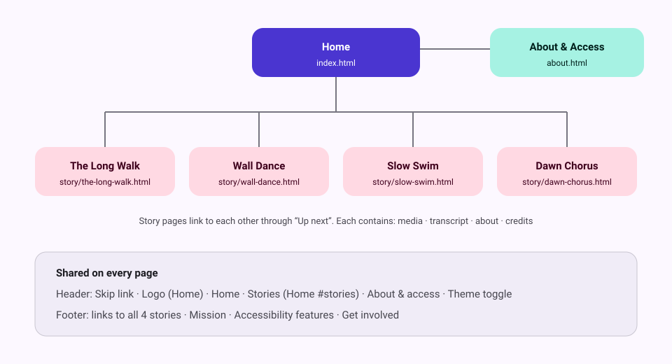

An accessible, three-page-type microsite for short audio and video stories told by ordinary people. It is built with semantic HTML5, Sass and vanilla JavaScript (no frameworks), styled after Google's Material 3 design system, and targets WCAG 2.1 AA.
| Deliverable | Location |
|---|---|
| Research document (PDF) | docs/research.pdf (source: docs/research.html) |
| Sitemap (diagram) | docs/sitemap.svg |
| Wireframes (link) | Wireframes page on Figma: Home, Story and About & Access, desktop and mobile (also in the research PDF, section 6) |
| High-fidelity mockups (link) | StoryCast: Everyday Voices on Figma: all 6 pages at desktop (1440px) and mobile (390px) |
| Documentation (PDF) | docs/documentation.pdf |
| Codebase | this repository |

Every page shares the same header (skip link, Home, Stories, About & access, theme toggle) and footer.
storycast/
├── index.html
├── about.html
├── favicon.svg
├── story/
│ ├── the-long-walk.html
│ ├── wall-dance.html
│ ├── slow-swim.html
│ └── dawn-chorus.html
├── sass/
│ ├── main.scss
│ ├── abstracts/
│ ├── base/
│ ├── layout/
│ ├── components/
│ │
│ └── pages/
├── css/main.css
├── js/main.js
├── assets/
│ ├── media/
│ ├── captions/
│ ├── transcripts/
│ └── images/
└── docs/
sass/main.scss declares @layer reset, base, components, layout, pages; and loads each folder into its layer with meta.load-css(). Later layers win, so a page or the app bar can adjust a component without out-specifying it._colors.scss, light and dark roles plus fixed media colours), type (_typography.scss) and spacing, shape, motion and breakpoints (_spacing.scss) are the only place raw values live. Partials read them through color-role(), color-media(), space(), corner() and the up() / down() breakpoint mixins.block__element--modifier; state uses ARIA attributes or .is-*. Bare element selectors are kept only for .prose (long-form text) and native <video> / <audio>.The media card (sass/components/_media-card.scss) responds to the width of its own container, not the viewport:
| Container width | Layout |
|---|---|
| under 18.5rem | Compact list row: small thumbnail beside the title (used for "Up next") |
| 18.5rem to 40rem | Stacked card: 16:9 thumbnail above the text (used in the story grid) |
| 40rem and up | Horizontal card with summary and access chips (used for the featured story) |
The story grid on the home page is also a container (card-grid): it switches from 1 to 2 to 4 columns based on its own width. The "Up next" list (card-stack) is one column in the story sidebar, where its cards become list rows, and several columns of stacked cards when the sidebar drops below the transcript.
Requirements: Node.js 18+.
npm install
npm run build
npm run serve
npm run watch
Use a local server rather than opening the files directly: browsers block caption files (<track>) on file:// pages, and seeking needs a server that supports range requests (http-server does).
docs/research.pdf and docs/documentation.pdf are made from docs/research.html and docs/documentation.html with your installed Chrome. After editing either HTML file, rebuild them:
npm run docs:pdf
npm run docs:watch
docs:watch rebuilds a PDF every time you save its HTML file (Ctrl+C to stop). If Chrome isn't found, set CHROME_PATH to its location.
| Requirement | How it's met |
|---|---|
| Semantic structure | header, nav, main, article, section, aside, figure/figcaption, footer; one h1 per page and a logical heading order |
| Skip link | "Skip to main content" is the first focusable element on every page |
| Captions | Every video and audio story has a WebVTT <track kind="captions">, on by default. The three video clips are silent, so their caption track says so |
| Transcripts | Every story has an interactive, timestamped transcript plus a .txt download. For the silent clips it describes what you see (WCAG 1.2.1) |
| Audio description | Every video has a kind="descriptions" track; the Audio description toggle reads it aloud with speech synthesis and lowers the video volume (falls back to an ARIA live region) |
| Contrast (1.4.3) | Every colour pairing in _colors.scss is ≥ 4.5:1 in light and dark themes (checked with a script) |
| Keyboard (2.1.1) | All controls are native button/a; ARIA tabs use arrow keys, Home and End; Esc closes the mobile menu |
| Shortcuts (2.1.4) | K, J, L, C and D only work while focus is inside the player |
| Focus visible (2.4.7) | A 3px two-tone focus ring on every interactive element |
| ARIA where needed | aria-current (nav, breadcrumb, transcript line), aria-pressed (toggles, filters), aria-expanded/aria-controls (menu), role="tablist"/tab/tabpanel, role="status" (filter results, form success) |
| Forms (3.3.1–3.3.3) | Visible labels, hints with aria-describedby, inline errors, aria-invalid, an error summary that receives focus |
| Reflow and zoom (1.4.10) | Single column at 320px; no horizontal scroll or overflowing content at 320, 480, 600, 768, 840, 1024, 1280 and 1920px |
| Motion (2.2.2, 2.3.3) | The home hero has a muted 10-second loop with a visible Pause/Play button. It doesn't start if prefers-reduced-motion is on (or without JS), and it has a text description. prefers-reduced-motion also disables transitions and smooth scrolling. No other media autoplays and nothing flashes |
| Themes | Follows the system theme; a toggle stores the choice; forced-colors (Windows High Contrast) is supported |
| Touch targets (2.5.8) | Interactive elements are at least 44 to 48px |
Testing done: axe-core (WCAG 2.0/2.1 A + AA + best practice) reports 0 violations on all 6 pages in light and dark themes at 1440px and 390px. A scripted keyboard and interaction test covers tabs, menu, filters, player toggles, transcript seeking and form validation. The browser accessibility tree (what screen readers read) was reviewed on every page type: one h1 and no skipped heading levels, header, navigation, main and footer landmarks on every page (each navigation named), no unnamed controls, and toggle states (pressed, expanded) exposed.
Screen readers: manual results with Orca, NVDA and VoiceOver are recorded in Screen reader tests below.
Results of manual testing with real screen readers. Mark each cell Pass, Issue (with a note below the table) or leave it as – (not tested yet).
| # | Page | Do this | You should hear | Orca + Firefox (Linux) | NVDA + Firefox (Windows) | VoiceOver + Safari (macOS / iOS) |
|---|---|---|---|---|---|---|
| 1 | Any page | Press Tab once | "Skip to main content, link" | – | – | – |
| 2 | Home | Press H repeatedly | The page title (h1), then "This week on StoryCast", "All stories" and the other section headings in order | – | – | – |
| 3 | Home | Move by landmark (Orca M, NVDA D, VoiceOver rotor → Landmarks) | Banner, "Main" navigation, main, the page sections, footer navigation, content info | – | – | – |
| 4 | Home | Move to the hero video button | "Pause background video, button" | – | – | – |
| 5 | Home | Activate the "Audio" filter | "Audio, toggle button, pressed", then "Showing 1 audio story." | – | – | – |
| 6 | Story | Move to the tabs, then press the arrow keys | "Transcript, tab, selected, 1 of 3", then the next tab | – | – | – |
| 7 | Story | Toggle "Captions" | "Captions, toggle button, pressed" / "not pressed" | – | – | – |
| 8 | Story | Turn on "Audio description" and play | Each description is spoken. Note whether it talks over the screen reader's own voice | – | – | – |
| 9 | Story | Activate a transcript timestamp | "Play from 24 seconds, button", then the video jumps there | – | – | – |
| 10 | Story | Use the native video or audio controls | Play, mute, time slider and full screen each have a name | – | – | – |
| 11 | About | Submit the empty form | The error summary is read ("There are 5 problems"), and each field announces its error | – | – | – |
| 12 | About | Fill in the form correctly and submit | The success message is read | – | – | – |
| 13 | Any page, narrow window or 400% zoom | Open and close the menu, then press Esc | "Menu, button, collapsed" / "expanded"; focus returns to the menu button | – | – | – |
Notes: none yet
Keys: Orca (Super + Alt + S to start; Orca key = Insert or Caps Lock; Orca + A switches browse/focus mode). NVDA (free from nvaccess.org, Windows only; Insert + Space switches browse/focus mode; Insert + F7 lists headings and links). VoiceOver (Cmd + F5 on a Mac; Settings → Accessibility → VoiceOver on iPhone; VO + U or a two-finger twist opens the rotor).
To test from another device, run npm run serve and open http://<this-computer's-IP>:8080 (find it with hostname -I); from a VirtualBox VM use http://10.0.2.2:8080.
The story videos and photos are linked directly from the Cloudinary sample library. The URLs use Cloudinary transformations (c_limit,w_1280,q_auto for video, so_<seconds> for poster frames, c_fill / c_thumb,g_face for photos), so each video loads at about 2 to 4.5 MB instead of 28 to 39 MB.
| Where | Media |
|---|---|
| The Long Walk | samples/elephants.mp4 |
| Wall Dance | samples/cld-sample-video.mp4 |
| Slow Swim | samples/sea-turtle.mp4 |
| Dawn Chorus cover | samples/landscapes/beach-boat.jpg |
| About: mission photo | samples/people/jazz.jpg |
| Home: call-to-action photo | cld-sample.jpg |
The home hero uses a looping Gemini video (assets/media/hero-loop.mp4, poster assets/images/hero-loop-poster.jpg).